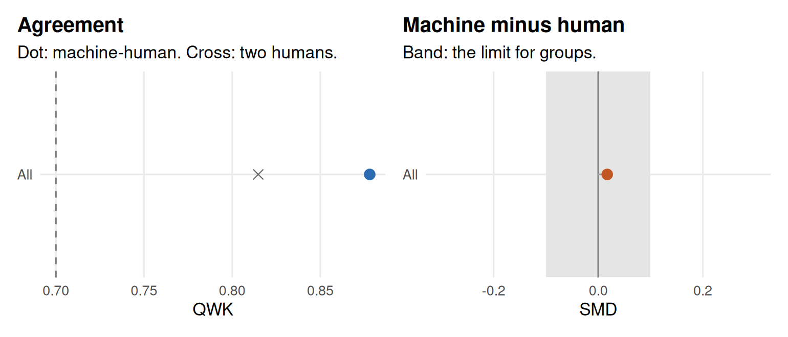

Chapter 16 Automated scoring
Learning goals. After this chapter you can
- explain what an automated scoring engine learns from human scores, and why it is a prediction model of the raters rather than a measurement model;
- train a simple engine on human-scored text with
train_scorer()and judge it on responses it has not seen; - evaluate machine scores with exact and adjacent agreement, quadratic
weighted kappa, the standardized mean difference and PRMSE,
overall and within groups, using
agreement_report(); - recognize construct-irrelevant features that an engine can reward, and choose how much of the scoring an engine should do.
Key terms: Automated scoring, PRMSE, feature, overfitting and cross-validation, human-in-the-loop.
16.1 The ideas
Constructed responses, from a one-sentence explanation to a full essay, are scored by trained raters against a rubric. Chapter 8 treated the raters’ scores as data for a polytomous IRT model and checked that two raters agree. Human scoring is slow and expensive, so many testing programs now use an automated scoring engine: A model that predicts the score a trained rater would give.
An engine is built the way any machine learning model is (Chapter 13). Each response is turned into features, such as the words it uses, its length, or its spelling, and a model learns from a set of human-scored responses which features go with which scores. The engine never reads the rubric. It learns whatever predicts the raters, including features the rubric does not mention. Two consequences follow:
- The engine can only be as good as its training scores. If the raters are inconsistent, the engine learns their noise; if they are biased, it learns their bias.
- Agreement is not the same as measuring the construct. Long answers tend to earn high scores, so length predicts scores, but an engine that rewards length is scoring something other than the rubric. Such features add construct-irrelevant variance and invite gaming.
Machine scores are therefore judged against human scores before they are used, following Williamson, Xi and Breyer (2012):
- Agreement with a human rater: Exact and adjacent agreement and the quadratic weighted kappa (QWK), which should be at least 0.70 and not much below the agreement between two humans (degradation of at most 0.10).
- Score level: The standardized mean difference (SMD) between machine and human scores, within $$0.15 overall.
- Fairness: The same SMD within groups of test takers, often within $$0.10, because an engine can match humans overall and still score one group lower (Bridgeman et al. 2012).
Agreement with one rater undersells a good engine, because that rater makes errors too. The proportional reduction in mean squared error (PRMSE) asks a better question: How much of the variance of the true score, the average over many raters, do the machine scores explain (Loukina et al. 2020)? It uses the double-scored responses to estimate rater error and corrects for it. A PRMSE of 0.80 means the machine scores predict the true score about as well as a measure with reliability 0.80 would.
Finally, a program decides how much the engine does. It can be the sole scorer; a check scorer next to one human read, where a second person reads only the responses on which human and machine disagree; or not be used at all. The stronger the role, the stronger the evidence it needs (Yan et al. 2020).
16.2 Example 1: Training and judging an engine
A Grade 7 science test asks: “Why does bread go mouldy faster on the kitchen counter than in the fridge?” A full answer has three key ideas: mould is a living fungus, it grows from spores that are already on the bread or in the air, and warmth speeds its growth while cold slows it. Each answer scores 0 to 3, one point per idea. We simulate 900 answers, all scored by one rater and half of them by a second. Students state each idea in many different ways, and some state an idea wrongly with much the same words (“Cold makes it grow faster.”), which earns no credit.
# Simulated short answers to the mouldy bread question, scored 0 to 3.
set.seed(1616)
pick <- function(...) sample(c(...), 1)
ideas <- list( # one function per key idea; each call writes one sentence
function() paste0(pick("Mould", "Mold", "The fuzz", "The green stuff", "It"), " ",
pick("is a fungus", "is a kind of fungus", "is a living fungus",
"is alive, a type of fungus", "is a living thing called a fungus"), "."),
function() paste0(pick("Its spores", "Tiny spores", "Mould spores", "Spores"), " ",
pick("are already on the bread", "float in the air",
"land on the bread from the air", "are everywhere in the air"),
pick("", " and start to grow", " and grow on it"), "."),
function() paste0(pick("Warmth", "A warm kitchen", "Heat", "Being warm"), " ",
pick("speeds up its growth", "makes it grow faster", "helps it grow quickly"), " ",
pick("and the cold fridge slows it down", "while cold slows it",
"but low temperatures stop it growing fast"), "."))
wrong <- list( # the same ideas stated wrongly, with much of the same vocabulary
function() paste0(pick("Mould", "Mold", "The fuzz", "It"), " ",
pick("is not alive", "is a kind of plant", "is just dirt", "is not a living thing"), "."),
function() paste0(pick("The bread", "The flour", "Old bread"), " ",
pick("makes the mould by itself", "turns into mould", "grows the fuzz on its own"), "."),
function() paste0(pick("Cold", "The fridge", "A low temperature"), " ",
pick("makes it grow faster", "speeds up its growth", "helps mould grow"), "."))
filler <- c("I think this is because of science.", "This happens a lot in my house.",
"Bread is made of flour and water.", "It is gross when bread goes bad.")
answer <- function(theta) {
has <- runif(3) < plogis(1.4 * (theta - c(-1, 0, 0.7)))
bad <- !has & runif(3) < 0.4
txt <- c(vapply(ideas[has], function(f) f(), ""), vapply(wrong[bad], function(f) f(), ""),
sample(filler, rbinom(1, 2, 0.4)))
if (!length(txt)) txt <- "I don't know."
list(text = paste(sample(txt), collapse = " "), true = sum(has))
}
ans <- lapply(rnorm(900), answer)
rate <- function(true) pmin(3, pmax(0, round(true + rnorm(length(true), 0, 0.45))))
bread <- data.frame(id = 1:900, response = vapply(ans, `[[`, "", "text"),
true = vapply(ans, `[[`, 0, "true"))
bread$human1 <- rate(bread$true)
bread$human2 <- ifelse(runif(900) < 0.5, rate(bread$true), NA)Two raters agree well on the double-scored answers. An engine has to do at least this well:
head(bread$response, 3)
#> [1] "A low temperature speeds up its growth. This happens a lot in my house. The fuzz is a living fungus."
#> [2] "Spores float in the air and grow on it. The green stuff is a kind of fungus."
#> [3] "Mold is a fungus. Being warm helps it grow quickly while cold slows it. This happens a lot in my house."
dbl <- !is.na(bread$human2)
agreement_report(bread$human2[dbl], bread$human1[dbl])[, c("n", "exact", "qwk")]
#> Machine-human agreement
#> n exact qwk
#> 458 0.66 0.81
#> Meets: QWK >= 0.7 and within 0.1 of human-human QWK; |SMD| <= 0.15 overall and <= 0.1 within groups (mv_rules()).We train the engine on the first 600 answers and keep the last 300 as a
test set that it never sees. train_scorer() fits a ridge regression of the
first human score on the words and two-word phrases of each answer, and
chooses the amount of shrinkage by cross-validation:
train <- bread[1:600, ]
test <- bread[601:900, ]
engine <- train_scorer(train, response = "response", score = "human1")
engine
#> <mv_scorer> ridge regression on words and two-word phrases
#> 600 responses, 366 features, lambda = 14.7, cross-validated RMSE = 0.51, QWK = 0.87
#> Check it with agreement_report(); use it with predict() or score_open().
head(tidy(engine), 10)
#> # A tibble: 10 × 3
#> by term weight
#> <chr> <chr> <dbl>
#> 1 all fungus 0.451
#> 2 all is a 0.294
#> 3 all spores 0.226
#> 4 all slows it 0.207
#> 5 all slows 0.207
#> 6 all the 0.197
#> 7 all a fungus 0.190
#> 8 all of fungus 0.172
#> 9 all a 0.169
#> 10 all cold slows 0.144Among the words with the largest weights are the ones the rubric cares about, fungus, spores and slows. Nothing told the engine so; it learned them because raters gave points to answers that used them. But is a and the are near the top as well. They carry no idea; they go with longer answers, and longer answers tend to state more ideas. Now the test set:
test$machine <- predict(engine, test)
agreement_report(test$machine, test$human1, test$human2)
#> Machine-human agreement
#> group n n_double mean_human mean_machine exact adjacent qwk qwk_human corr
#> All 300 162 1.66 1.67 0.77 1.00 0.88 0.81 0.88
#> smd prmse verdict
#> 0.02 0.94 meets
#> Meets: QWK >= 0.7 and within 0.1 of human-human QWK; |SMD| <= 0.15 overall and <= 0.1 within groups (mv_rules()).On answers it has never seen, the engine agrees with the first rater at least as well as the two raters agree with each other, its scores are at the same level (SMD near zero), and its PRMSE is above 0.9: It predicts the true score better than a single rater does. On this evidence it could at least serve as a check scorer. Figure 16.1 shows the same statistics as a picture.

Figure 16.1: Agreement report for the engine on the test set: QWK with the first rater (dot) next to human-human QWK (cross), and the machine-human SMD with the band of $$0.10.
16.3 Example 2: What is the engine rewarding?
Agreement statistics average over the answers in the test set. To see what the engine actually rewards, give it answers whose correct score you know. A rater would give the first two answers below 0, because they name the right words but explain nothing; the third 0, because both its statements are wrong; and the fourth the full 3, because it states all three ideas in words the engine has rarely seen:
# Four answers with a known correct score, unlike any in the training data.
probe <- data.frame(response = c(
"fungus spores cold warm fungus spores grow",
"Spores spores spores. Fungus fungus fungus. Warm warm warm.",
"The fuzz is not a living thing. Cold makes it grow faster.",
"It is a mushroom-like organism whose seeds drift onto the loaf, and it multiplies quicker in heat than in a chilled fridge."),
rater = c(0, 0, 0, 3))probe$machine <- predict(engine, probe)
probe$raw <- round(predict(engine, probe, type = "raw"), 2)
probe[, c("rater", "machine", "raw")]
#> rater machine raw
#> 1 0 1 1.10
#> 2 0 1 1.21
#> 3 0 0 0.34
#> 4 3 1 1.08The engine gets the third answer right: Wrong statements like these were common in the training data, and it learned that not alive and grow faster after cold go with low scores. It gets the other three wrong. It gives a point to each list of key words, which explains nothing, and only one point to the best answer, because that answer is phrased in words the training answers never used. Nothing in the agreement statistics of Example 1 warned about this: The test set held only answers like the training answers, so it could not show what happens with an unusual writer, or when test takers learn how the engine works.
This is the core lesson of automated scoring for a psychometrician: agreement with raters is necessary evidence, not sufficient evidence. A validity argument for machine scores also needs to show that the features the engine uses are part of the construct, that the engine treats groups of test takers the same way, and that the scoring design catches responses the engine was not built for. A check scorer design does the last part automatically: Answers on which human and machine disagree go to a second reader.
16.4 Your turn
- Retrain the engine in Example 1 with
length = TRUE, which adds the number of words as a feature. Does agreement on the test set change? Look at the weight of(length)intidy(). - Train the engine on only the first 100 answers and evaluate it on the same test set. What happens to the QWK and the PRMSE, and why?
- In Example 1, the engine was judged against
human1, the score it was trained on. Compute the QWK of the machine scores withhuman2on the double-scored test answers. Is it lower or higher than withhuman1, and what does that tell you? - Your program is offered an engine with a QWK of 0.86 against one rater on a vendor’s own test set. List three more pieces of evidence you would want before using it as the sole scorer.
Solutions
# 1. adding response length
engine_len <- train_scorer(train, length = TRUE)
agreement_report(predict(engine_len, test), test$human1, test$human2)[, c("qwk", "smd", "prmse")]
#> Machine-human agreement
#> qwk smd prmse
#> 0.88 0.02 0.94
#> Meets: QWK >= 0.7 and within 0.1 of human-human QWK; |SMD| <= 0.15 overall and <= 0.1 within groups (mv_rules()).
tidy(engine_len)[tidy(engine_len)$term == "(length)", ]
#> # A tibble: 1 × 3
#> by term weight
#> <chr> <chr> <dbl>
#> 1 all (length) 0.0781
# 2. a small training set
engine_100 <- train_scorer(bread[1:100, ])
agreement_report(predict(engine_100, test), test$human1, test$human2)[, c("qwk", "smd", "prmse")]
#> Machine-human agreement
#> qwk smd prmse
#> 0.78 0.05 0.79
#> Meets: QWK >= 0.7 and within 0.1 of human-human QWK; |SMD| <= 0.15 overall and <= 0.1 within groups (mv_rules()).
# 3. agreement with the second rater
d <- !is.na(test$human2)
agreement_report(test$machine[d], test$human2[d])[, c("n", "qwk")]
#> Machine-human agreement
#> n qwk
#> 162 0.88
#> Meets: QWK >= 0.7 and within 0.1 of human-human QWK; |SMD| <= 0.15 overall and <= 0.1 within groups (mv_rules()).- Agreement does not change, and length gets a small weight. Here the words already carry the key ideas, so length adds little. In real essays length is often one of the strongest predictors, which is why engines that use it need checks for gaming and for groups who write shorter answers.
- With 100 answers the engine has seen fewer ways of stating each idea, so it misses more of them in new answers: QWK drops by about 0.1 and PRMSE to below 0.8, now no better than a single rater. Engines need hundreds of scored responses per item, and more for long answers.
- The QWK with
human2is about the same as withhuman1, although the engine never sawhuman2. The engine has learned the rubric’s ideas, not the quirks of one rater; an engine that agreed much better with its training rater than with others would be copying that rater’s errors. - For example: Agreement on an independent sample of your own test takers, not the vendor’s; the SMD within groups such as English language learners (Bridgeman et al. 2012); PRMSE on double-scored responses; evidence that it does not reward length or key-word lists; and how unusual responses are routed to people.
In the lab
Lab 7, run_lab("auto-scoring"), trains an engine on 1,600 science
explanations, checks it the way a testing program would, and asks whether it
can score on its own. The AI
Hub collects the
other AI tools in mirtverse, and score_open() uses a trained engine, or a
language model, inside the assessment pipeline.
Further reading
Williamson, Xi and Breyer (2012) set out the evaluation framework used in this chapter. Yan, Rupp and Foltz (2020) cover scoring engines and their operational use in depth. Loukina et al. (2020) explain PRMSE, and Bridgeman, Trapani and Attali (2012) show how an engine can differ from human raters for some groups of test takers.